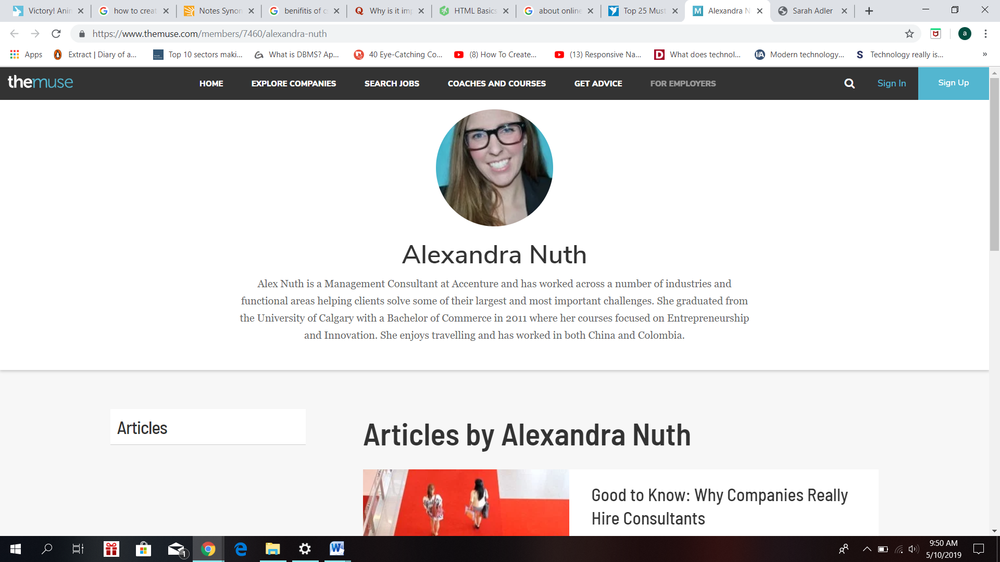
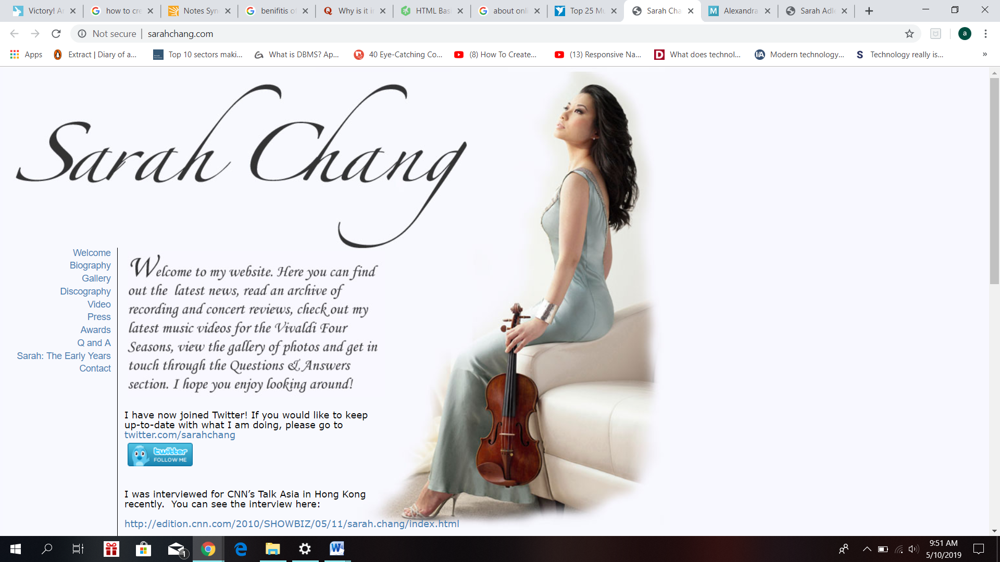
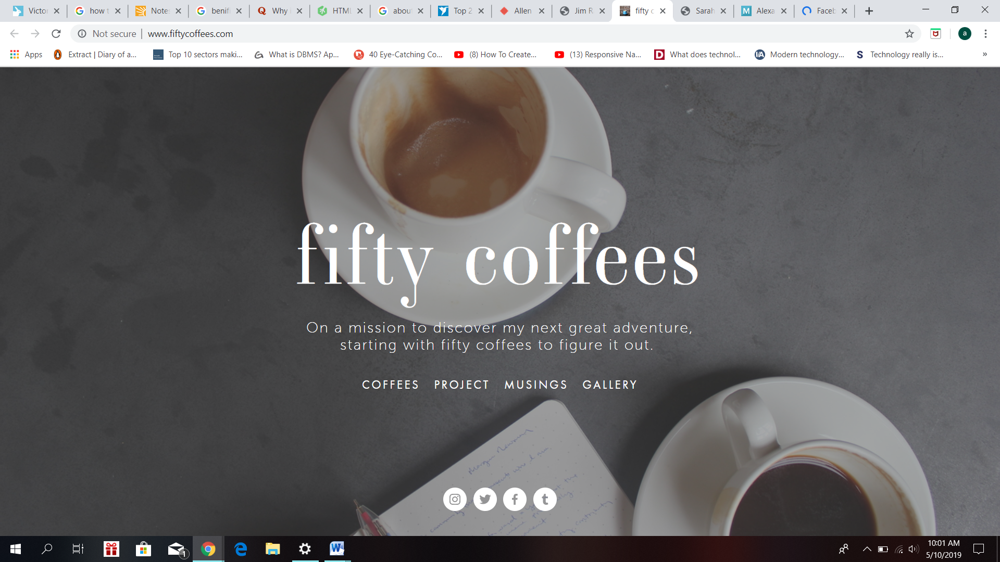
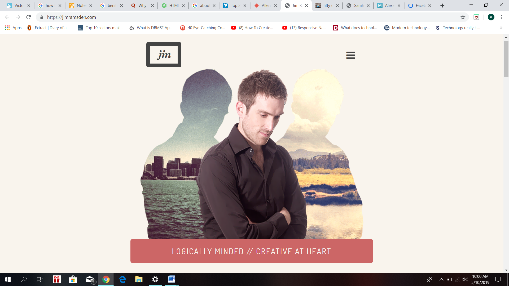

|
Our lecture and tutor classes and notes played an important role in completion of the project. However, I also researched websites which helped me think out of the box the more I researched the better ideas I got. The websites which I researched belong to people of various backgrounds. Alexandra Nuth, Sarah Chang, fifty coffees, Jim Ramsden and Adam Hartwing. |
|
Alexandra Nuth’s website has a good color combination which gives out simple yet positive vibes.  |
|
Sarah Chang’s website has a website layout with navigation menu on the left, and a photo on the right.  |
|
Fifty coffees have linked their page to the social media sites and it is quite impressive too.  |
|
Jim Ramsden has a toggled navigation bar which displays notes, photos, projects and profile.  |